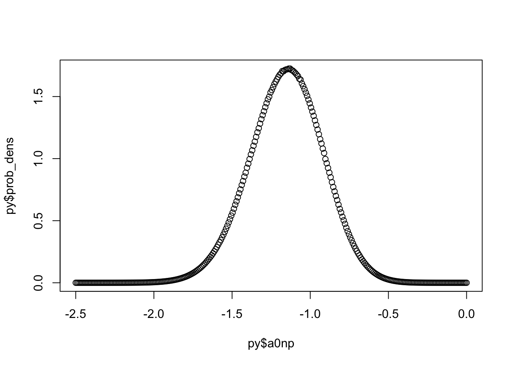

### Prepare model inputs
set.seed(99999)
# Set up data
rr_k_ctrl <- c(0.20) # control response rate for each basket
rr_k_trt <- c(0.40) # treatment response rate for each basket
K<-length(rr_k_ctrl) # number of baskets
N_k_ctrl <- rep(100, K) # number of control participants per basket
N_k_trt <- rep(100, K) # number of treatment participants per basket
N_k <- N_k_ctrl + N_k_trt # number of participants per basket (both arms combined)
N <- sum(N_k) # total sample size
k_vec <- rep(1:K, N_k) # N x 1 vector of basket indicators (1 to K)
T_vec<-NULL;
y<-NULL;
for(i in 1:K){ # for each basket repeat 0-control 1-trt according to the specifc Ns
T_vec<-c(T_vec,rep(0:1,c(N_k_ctrl[i],N_k_trt[i]))) # treatment/control indicator
y<-c(y,
c(rbinom(N_k_ctrl[i],1,rr_k_ctrl[i]), # bernoulli for control
rbinom(N_k_trt[i],1,rr_k_trt[i]))) # for trt
}
thedata<-data.frame(y,basketID=k_vec,Treatment=T_vec)
py$thedata<-r_to_py(thedata) # THE KEY LINE - makes data available to Python
# this is converted into a pandas dataframe object in PythonVegas
Quick start
This vignette is shows how to estimate the posterior density for a BHM - Bayesian hierarchical model - using numerical integration via the vegas algorithm. The model has six parameters and is a logistic regression. First part is estimation of log marginal likelihood without jacobian transformation, the second part using jacobian, and third part computes the posterior density for the intercept term (integrates out the remaining parameters and standardised by marginal likelihood).
Data set
The R chunk below creates a simple dataset of three cols:
- a binary response variable (0/1 = non-responder/responder),
- a binary treatment variable (0/1 = control/test treatment)
- and a basket ID variable. (1)
The basket ID is currently set fixed at 1, denoting there is only one basket in this trial, i.e. a classical two arm randomized trial design. Baskets will be added in other vignettes.
Setup
import numpy as np
import pandas as pd
#from jax import config
#config.update("jax_enable_x64", True) ## if turn this on then vegas need np.array() in function return values
import jax.numpy as jnp
import jax
import vegas
import math
import gvar
## The data.frame passed is now a panda df but for TPF this needs to be further
## converted into tensors here we simply convert each col of the data.frame into
## a Rank 1 tensor (i.e. a vector)
y_data=jnp.array(thedata.iloc[:,0],dtype=jnp.float32)[:,None] # 1 col matrix
k_vec=jnp.array(thedata.iloc[:,1])-1
T_vec=jnp.array(thedata.iloc[:,2],dtype=jnp.float32)[:,None] # 1 col matrix
#pars=jnp.array([[0.1,-1.1,2.1]],dtype=jnp.float32)
#pars=jnp.stack([pars, pars,pars], axis=1)
@jax.jit
def half_normal_logpdf(x, sigma):
# Log-constant: log(sqrt(2) / sqrt(pi))
log_const = 0.5*(jnp.log(2.0) - jnp.log(jnp.pi)) - jnp.log(sigma)
# Log-exponent term
log_exp = -((x*x) / (2.0 * sigma*sigma))
return log_const+log_exp
@jax.jit
def compute_log_lik(theta, y,T):
#print(f"shape1={x.shape}\n")
"""
mu0 ~ normal(0, 2.5); // vectorized normal priors for hierarchical means (specify SD in normal distn)
sigma0 ~ normal(0, 2.5); // vectorized half-normal priors for hierarchical SDs (specify SD in normal distn)
mu1 ~ normal(0, 2.5); // vectorized normal priors for hierarchical means (specify SD in normal distn)
sigma1 ~ normal(0, 2.5);
a0 ~ normal(mu0,sigma0)
a1 ~ normal(mu1,sigma1)
logL + logpdf(a0|mu0,sigma0) + logpdf(a1|mu1,sigma1) + logpdf(mu0) + logpdf(m1) + logpdf(sigma0) + logpdf(sigma1)
logL = sum_i^n ( y_i*(a0+a1*T_i) - log(1+ exp(a0+a1*T_i) ) )
logpdf(a0|mu0,sigma0) = jax.scipy.stats.norm.logpdf(a0,loc=mu0,scale=sigma0)
logpdf(a1|mu1,sigma1) = jax.scipy.stats.norm.logpdf(a1,loc=mu1,scale=sigma1)
logpdf(mu0) = jax.scipy.stats.norm.logpdf(mu0,loc=0.,scale=2.5)
logpdf(mu1) = jax.scipy.stats.norm.logpdf(mu1,loc=0.,scale=2.5)
logpdf(sigma0) = half_normal_logpdf(sigma0, 2.5)
logpdf(sigma1) = half_normal_logpdf(sigma1, 2.5)
Expects x to have shape (batch_size, DIM).
"""
#print(f"shape={theta.shape}\n")
#print(f"shape={theta.shape}\n")
a0=theta[0,:]#,:] # (3,)
a1=theta[1,:]#,:] # (3,)
mu0=theta[2,:]
mu1=theta[3,:]
sigma0=theta[4,:]
sigma1=theta[5,:]
eta=a0+a1*T # (10,3) where T_vec = (3,) and (10,1) broadcast to (10,3)
# y_data*eta - jnp.log(1+jnp.exp(eta)) this is (10,3) - want col sums, so collapse over rows
logL = jnp.sum(y*eta - jnp.log(1+jnp.exp(eta)),axis=0) #
# now add the priors
# simple N(0,sd=10)
prior_a0 = jax.scipy.stats.norm.logpdf(a0,loc=mu0,scale=sigma0)
prior_a1 = jax.scipy.stats.norm.logpdf(a1,loc=mu1,scale=sigma1)
prior_mu0 = jax.scipy.stats.norm.logpdf(mu0,loc=0.,scale=2.5)
prior_mu1 = jax.scipy.stats.norm.logpdf(mu1,loc=0.,scale=2.5)
prior_sigma0 = half_normal_logpdf(sigma0, 2.5)
prior_sigma1 = half_normal_logpdf(sigma1, 2.5)
logDens = logL + prior_a0 + prior_a1 + prior_mu0 + prior_mu1 + prior_sigma0 + prior_sigma1
return logDens # this will be (3,)
# 2. Setup Vegas with a Shifting Logic
@vegas.rbatchintegrand
class StableLikelihood:
def __init__(self, y, T):
self.y = y
self.T = T
self.l_max = 0.0 # Will be updated after warm-up
def __call__(self, theta):
theta_jax = jnp.array(theta)
log_lik = compute_log_lik(theta_jax, self.y,self.T)
# Shift by the maximum found so far
# This keeps the result near 1.0 instead of 1e-300
## return np.array(jnp.exp(log_lik - self.l_max)) # needt this is using x64 - vegas expects np
return jnp.exp(log_lik - self.l_max)
model = StableLikelihood(y=y_data,T=T_vec)
start = jnp.array([-1,-1,-1,-1,0.0001,0.0001],dtype=jnp.float32) # a0 a1
stop = jnp.array([1,1,1,1,1,1],dtype=jnp.float32) # a0 a1
searchPts=jnp.transpose(jnp.linspace(start, stop, 500))
model.l_max=jnp.max(compute_log_lik(searchPts, model.y,model.T))
#explicitly set seed
gvar.ranseed(99990)
#> 99990
integ = vegas.Integrator(jnp.array([[-4, 4],[-4,4],[-4,4],[-4,4],[0.0001,5],[0.0001,5]],dtype=jnp.float32))
# STAGE 1: Warm-up
res_warmup = integ(model, nitn=10, neval=10000)
# STAGE 2: Production (Stable Integration)
result = integ(model, nitn=10, neval=500000)
# 5. Output results
print(f"\nIntegration Results:")
#>
#> Integration Results:
#print(result.summary())
print(f"Result: {result.mean:.8f} +/- {result.sdev:.8f}")
#> Result: 14681.34999024 +/- 9.62664301
print(f"Q-value: {result.Q:.2f} (should be close to 0.5 for a good fit)")
#> Q-value: 0.08 (should be close to 0.5 for a good fit)
# STAGE 3: Final Log-Evidence Calculation
# log(I) = l_max + log(scaled_integral)
log_evidence = model.l_max + jnp.log(result.mean)
print(f"Log Evidence: {log_evidence}")
#> Log Evidence: -129.49496459960938
# we want posterior values
# compute_log_lik(theta, y,T) - log_evidence = log( f(D|a0)f(a0) )
mydens=np.array(jnp.exp(compute_log_lik(searchPts,y_data,T_vec) - log_evidence))
myX=np.array(searchPts)import numpy as np
import pandas as pd
#from jax import config
#config.update("jax_enable_x64", True) ## if turn this on then vegas need np.array() in function return values
import jax.numpy as jnp
import jax
import vegas
import math
import gvar
## The data.frame passed is now a panda df but for TPF this needs to be further
## converted into tensors here we simply convert each col of the data.frame into
## a Rank 1 tensor (i.e. a vector)
y_data=jnp.array(thedata.iloc[:,0],dtype=jnp.float32)[:,None] # 1 col matrix
k_vec=jnp.array(thedata.iloc[:,1])-1
T_vec=jnp.array(thedata.iloc[:,2],dtype=jnp.float32)[:,None] # 1 col matrix
pars=jnp.array([[0.1,-1.1,2.1]],dtype=jnp.float32)
#pars=jnp.stack([pars, pars,pars], axis=1)
@jax.jit
def half_normal_logpdf(x, sigma):
# Log-constant: log(sqrt(2) / sqrt(pi))
log_const = 0.5*(jnp.log(2.0) - jnp.log(jnp.pi)) - jnp.log(sigma)
# Log-exponent term
log_exp = -((x*x) / (2.0 * sigma*sigma))
return log_const+log_exp
@jax.jit
def compute_log_lik(theta, y,T):
#print(f"shape1={x.shape}\n")
"""
mu0 ~ normal(0, 2.5); // vectorized normal priors for hierarchical means (specify SD in normal distn)
sigma0 ~ normal(0, 2.5); // vectorized half-normal priors for hierarchical SDs (specify SD in normal distn)
mu1 ~ normal(0, 2.5); // vectorized normal priors for hierarchical means (specify SD in normal distn)
sigma1 ~ normal(0, 2.5);
a0 ~ normal(mu0,sigma0)
a1 ~ normal(mu1,sigma1)
logL + logpdf(a0|mu0,sigma0) + logpdf(a1|mu1,sigma1) + logpdf(mu0) + logpdf(m1) + logpdf(sigma0) + logpdf(sigma1)
logL = sum_i^n ( y_i*(a0+a1*T_i) - log(1+ exp(a0+a1*T_i) ) )
logpdf(a0|mu0,sigma0) = jax.scipy.stats.norm.logpdf(a0,loc=mu0,scale=sigma0)
logpdf(a1|mu1,sigma1) = jax.scipy.stats.norm.logpdf(a1,loc=mu1,scale=sigma1)
logpdf(mu0) = jax.scipy.stats.norm.logpdf(mu0,loc=0.,scale=2.5)
logpdf(mu1) = jax.scipy.stats.norm.logpdf(mu1,loc=0.,scale=2.5)
logpdf(sigma0) = half_normal_logpdf(sigma0, 2.5)
logpdf(sigma1) = half_normal_logpdf(sigma1, 2.5)
Expects x to have shape (batch_size, DIM).
"""
#print(f"shape={theta.shape}\n")
#print(f"shape={theta.shape}\n")
theta0=jnp.clip(theta[0,:],-0.99999, 0.99999)
theta1=jnp.clip(theta[1,:],-0.99999, 0.99999)
theta2=jnp.clip(theta[2,:],-0.99999, 0.99999)
theta3=jnp.clip(theta[3,:],-0.99999, 0.99999)
theta4=jnp.clip(theta[4,:],0.00001, 0.99999)
theta5=jnp.clip(theta[5,:],0.00001, 0.99999)
jacobianL = ( jnp.log(1+jnp.power(theta0,2)) - 2.0*jnp.log(1-jnp.power(theta0,2))
+ jnp.log(1+jnp.power(theta1,2)) - 2.0*jnp.log(1-jnp.power(theta1,2))
+ jnp.log(1+jnp.power(theta2,2)) - 2.0*jnp.log(1-jnp.power(theta2,2))
+ jnp.log(1+jnp.power(theta3,2)) - 2.0*jnp.log(1-jnp.power(theta3,2))
+ jnp.log(1+jnp.power(theta4,2)) - 2.0*jnp.log(1-jnp.power(theta4,2))
+ jnp.log(1+jnp.power(theta5,2)) - 2.0*jnp.log(1-jnp.power(theta5,2))
)
#print(f"jacobian={jacobianL}\n")
a0=theta0/(1-jnp.power(theta0,2))
a1=theta1/(1-jnp.power(theta1,2))
mu0=theta2/(1-jnp.power(theta2,2))
mu1=theta3/(1-jnp.power(theta3,2))
sigma0=theta4/(1-jnp.power(theta4,2))
sigma1=theta5/(1-jnp.power(theta5,2))
#print(f"a0={a0} a1={a1} mu0={mu0} mu1={mu1} sigma0={sigma0} sigma1={sigma1}\n")
eta=a0+a1*T # (10,3) where T_vec = (3,) and (10,1) broadcast to (10,3)
# y_data*eta - jnp.log(1+jnp.exp(eta)) this is (10,3) - want col sums, so collapse over rows
logL = jnp.sum(y*eta - jnp.log(1+jnp.exp(eta)),axis=0) #
#print(f"logL={logL}\n")
# now add the priors
# simple N(0,sd=10)
prior_a0 = jax.scipy.stats.norm.logpdf(a0,loc=mu0,scale=sigma0)
prior_a1 = jax.scipy.stats.norm.logpdf(a1,loc=mu1,scale=sigma1)
prior_mu0 = jax.scipy.stats.norm.logpdf(mu0,loc=0.,scale=2.5)
prior_mu1 = jax.scipy.stats.norm.logpdf(mu1,loc=0.,scale=2.5)
prior_sigma0 = half_normal_logpdf(sigma0, 2.5)
prior_sigma1 = half_normal_logpdf(sigma1, 2.5)
logDens = logL + prior_a0 + prior_a1 + prior_mu0 + prior_mu1 + prior_sigma0 + prior_sigma1
#print(f"logDens={logDens}\n")
return (logDens + jacobianL) # this will be (3,)
# 2. Setup Vegas with a Shifting Logic
@vegas.rbatchintegrand
class StableLikelihood:
def __init__(self, y, T):
self.y = y
self.T = T
self.l_max = 0.0 # Will be updated after warm-up
def __call__(self, theta):
theta_jax = jnp.array(theta)
log_lik = compute_log_lik(theta_jax, self.y,self.T)
# Shift by the maximum found so far
# This keeps the result near 1.0 instead of 1e-300
## return np.array(jnp.exp(log_lik - self.l_max)) # needt this is using x64 - vegas expects np
return jnp.exp(log_lik - self.l_max)
model = StableLikelihood(y=y_data,T=T_vec)
start = jnp.array([-1,-1,-1,-1,0.0001,0.0001],dtype=jnp.float32) # a0 a1
stop = jnp.array([1,1,1,1,1,1],dtype=jnp.float32) # a0 a1
searchPts=jnp.transpose(jnp.linspace(start, stop, 1000))
model.l_max=jnp.max(compute_log_lik(searchPts, model.y,model.T))
#explicitly set seed
gvar.ranseed(99990)
#> 99990
integ = vegas.Integrator(jnp.array([[-1, 1],[-1,1],[-1,1],[-1,1],[0.0001,1],[0.0001,1]],dtype=jnp.float32))
# STAGE 1: Warm-up
res_warmup = integ(model, nitn=10, neval=10000)
# STAGE 2: Production (Stable Integration)
result = integ(model, nitn=10, neval=50000)
# 5. Output results
#print(f"\nIntegration Results:")
#print(result.summary())
#print(f"Result: {result.mean:.8f} +/- {result.sdev:.8f}")
#print(f"Q-value: {result.Q:.2f} (should be close to 0.5 for a good fit)")
# STAGE 3: Final Log-Evidence Calculation
# log(I) = l_max + log(scaled_integral)
log_evidence = model.l_max + jnp.log(result.mean)
print(f"Log Evidence: {log_evidence}")
#> Log Evidence: -129.42108154296875
# we want posterior values
# compute_log_lik(theta, y,T) - log_evidence = log( f(D|a0)f(a0) )
#mydens=np.array(jnp.exp(compute_log_lik(searchPts,y_data,T_vec) - log_evidence))
#myX=np.array(searchPts)
## we now have the constant of integ log_P(data), need to integrat out the others
import numpy as np
import pandas as pd
#from jax import config
#config.update("jax_enable_x64", True) ## if turn this on then vegas need np.array() in function return values
import jax.numpy as jnp
import jax
import vegas
import math
import gvar
## The data.frame passed is now a panda df but for TPF this needs to be further
## converted into tensors here we simply convert each col of the data.frame into
## a Rank 1 tensor (i.e. a vector)
y_data=jnp.array(thedata.iloc[:,0],dtype=jnp.float32)[:,None] # 1 col matrix
k_vec=jnp.array(thedata.iloc[:,1])-1
T_vec=jnp.array(thedata.iloc[:,2],dtype=jnp.float32)[:,None] # 1 col matrix
pars=jnp.array([[0.1,-1.1,2.1]],dtype=jnp.float32)
#pars=jnp.stack([pars, pars,pars], axis=1)
@jax.jit
def half_normal_logpdf(x, sigma):
# Log-constant: log(sqrt(2) / sqrt(pi))
log_const = 0.5*(jnp.log(2.0) - jnp.log(jnp.pi)) - jnp.log(sigma)
# Log-exponent term
log_exp = -((x*x) / (2.0 * sigma*sigma))
return log_const+log_exp
@jax.jit
def compute_log_lik2(theta, y,T,a0):
#print(f"shape1={x.shape}\n")
"""
as above but we integrate out theta1-theta5 for fixed theta0
"""
#print(f"shape={theta.shape}\n")
#print(f"shape={theta.shape}\n")
theta1=jnp.clip(theta[0,:],-0.99999, 0.99999)
theta2=jnp.clip(theta[1,:],-0.99999, 0.99999)
theta3=jnp.clip(theta[2,:],-0.99999, 0.99999)
theta4=jnp.clip(theta[3,:],0.00001, 0.99999)
theta5=jnp.clip(theta[4,:],0.00001, 0.99999)
jacobianL = ( jnp.log(1+jnp.power(theta1,2)) - 2.0*jnp.log(1-jnp.power(theta1,2))
+ jnp.log(1+jnp.power(theta2,2)) - 2.0*jnp.log(1-jnp.power(theta2,2))
+ jnp.log(1+jnp.power(theta3,2)) - 2.0*jnp.log(1-jnp.power(theta3,2))
+ jnp.log(1+jnp.power(theta4,2)) - 2.0*jnp.log(1-jnp.power(theta4,2))
+ jnp.log(1+jnp.power(theta5,2)) - 2.0*jnp.log(1-jnp.power(theta5,2))
)
#print(f"jacobian={jacobianL}\n")
a1=theta1/(1-jnp.power(theta1,2))
mu0=theta2/(1-jnp.power(theta2,2))
mu1=theta3/(1-jnp.power(theta3,2))
sigma0=theta4/(1-jnp.power(theta4,2))
sigma1=theta5/(1-jnp.power(theta5,2))
#print(f"a0={a0} a1={a1} mu0={mu0} mu1={mu1} sigma0={sigma0} sigma1={sigma1}\n")
eta=a0+a1*T # (10,3) where T_vec = (3,) and (10,1) broadcast to (10,3)
# y_data*eta - jnp.log(1+jnp.exp(eta)) this is (10,3) - want col sums, so collapse over rows
logL = jnp.sum(y*eta - jnp.log(1+jnp.exp(eta)),axis=0) #
#print(f"logL={logL}\n")
# now add the priors
# simple N(0,sd=10)
prior_a0 = jax.scipy.stats.norm.logpdf(a0,loc=mu0,scale=sigma0)
prior_a1 = jax.scipy.stats.norm.logpdf(a1,loc=mu1,scale=sigma1)
prior_mu0 = jax.scipy.stats.norm.logpdf(mu0,loc=0.,scale=2.5)
prior_mu1 = jax.scipy.stats.norm.logpdf(mu1,loc=0.,scale=2.5)
prior_sigma0 = half_normal_logpdf(sigma0, 2.5)
prior_sigma1 = half_normal_logpdf(sigma1, 2.5)
logDens = logL + prior_a0 + prior_a1 + prior_mu0 + prior_mu1 + prior_sigma0 + prior_sigma1
#print(f"logDens={logDens}\n")
return (logDens + jacobianL) # this will be (3,)
# 2. Setup Vegas with a Shifting Logic
@vegas.rbatchintegrand
class StableLikelihood2:
def __init__(self, y, T,a0):
self.y = y
self.T = T
self.l_max = 0.0 # Will be updated after warm-up
self.a0 = a0 # random variable which we want to compute density value for
def __call__(self, theta):
theta_jax = jnp.array(theta)
log_lik = compute_log_lik2(theta_jax, self.y,self.T, self.a0)
# Shift by the maximum found so far
# This keeps the result near 1.0 instead of 1e-300
## return np.array(jnp.exp(log_lik - self.l_max)) # needt this is using x64 - vegas expects np
return jnp.exp(log_lik - self.l_max)
#explicitly set seed
gvar.ranseed(99991)
#> 99991
Ngrid=300
#a0= jnp.array([-1.5,-1.14,-1.,-0.5],dtype=jnp.float32)
a0= jnp.linspace(-2.5,-0.0,Ngrid,dtype=jnp.float32)
prob_dens=np.ones([Ngrid],dtype=np.float32)
i=0
for x in a0:
model = StableLikelihood2(y=y_data,T=T_vec,a0=x)
start = jnp.array([-1,-1,-1,0.0001,0.0001],dtype=jnp.float32) # a0 a1
stop = jnp.array([1,1,1,1,1],dtype=jnp.float32) # a0 a1
searchPts=jnp.transpose(jnp.linspace(start, stop, 10000))
model.l_max=jnp.max(compute_log_lik2(searchPts, model.y,model.T,model.a0))
integ = vegas.Integrator(jnp.array([[-1,1],[-1,1],[-1,1],[0.0001,1],[0.0001,1]],dtype=jnp.float32))
res_warmup = integ(model, nitn=10, neval=10000)
result = integ(model, nitn=10, neval=50000)
marg_a0 = model.l_max + jnp.log(result.mean)
prob_dens[[i]]=np.array(jnp.exp(marg_a0-log_evidence))
#print(f"a0={x} a0 dens={prob_dens[[i]]}\n")
i=i+1
# we want posterior values
# compute_log_lik(theta, y,T) - log_evidence = log( f(D|a0)f(a0) )
a0np= np.array(a0)
plot(py$a0np,py$prob_dens,type="p")
#abline(v=coef(m0))